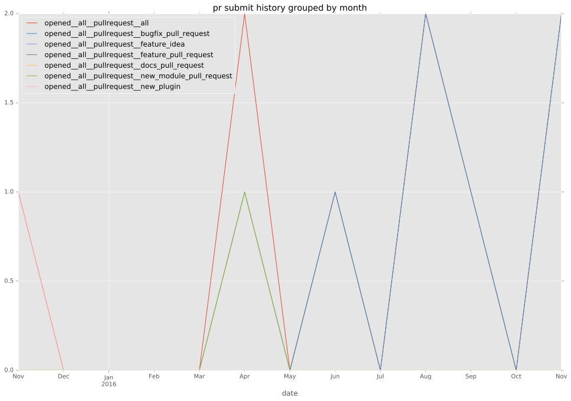
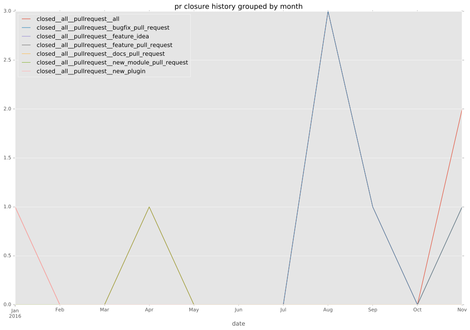

total issue counts
bugfix pull request: 4
pullrequest: 6
issue: 1
new plugin: 2
bug report: 1
issue history
pullrequest history


days open by issue type
all
count: 11
std: 21.4162215494
min: 0
max: 64
median: 0.0
mean: 10.6363636364
pullrequest
count: 0
std: nan
min: nan
max: nan
median: nan
mean: nan
bugfix pull request
count: 7
std: 24.1897262726
min: 0
max: 64
median: 0.0
mean: 9.14285714286
issue
count: 0
std: nan
min: nan
max: nan
median: nan
mean: nan
new plugin
count: 3
std: 20.7846096908
min: 5
max: 41
median: 5.0
mean: 17.0
bug report
count: 1
std: nan
min: 2
max: 2
median: 2.0
mean: 2.0
closures grouped by total days open